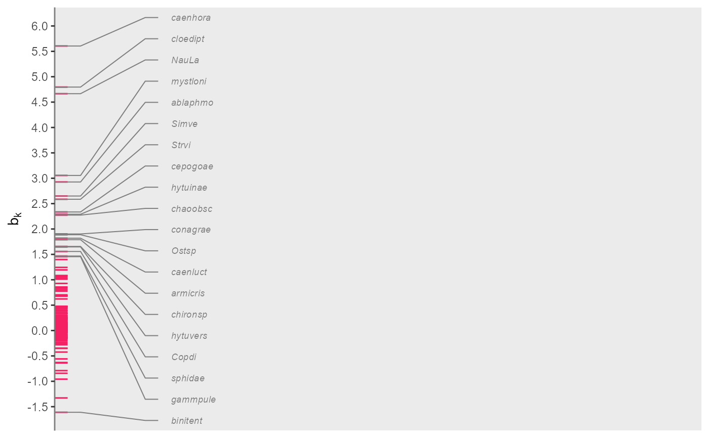
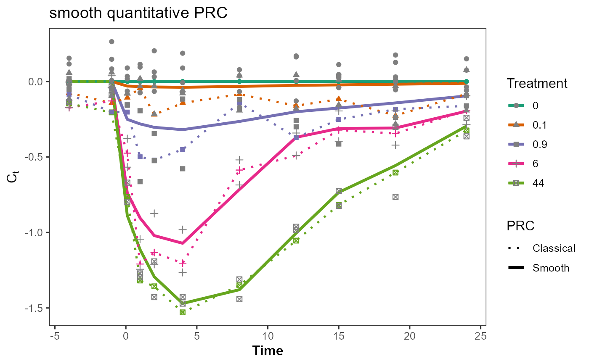
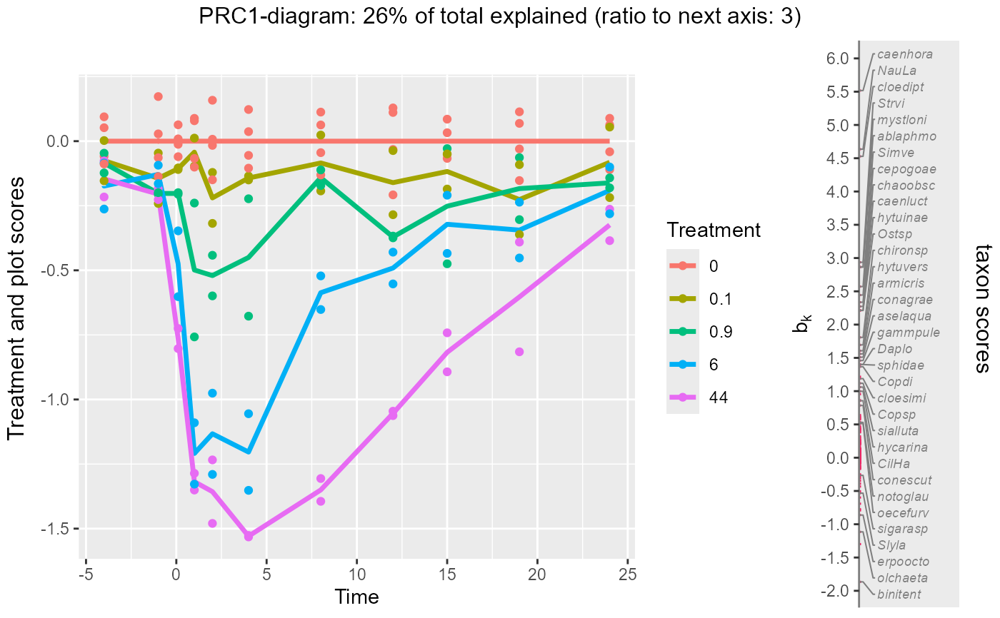
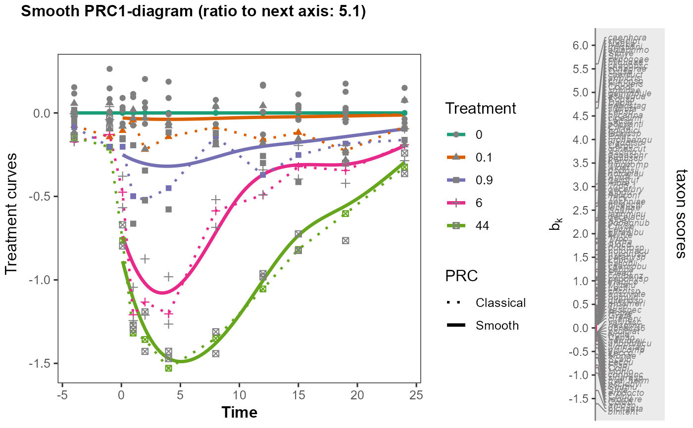
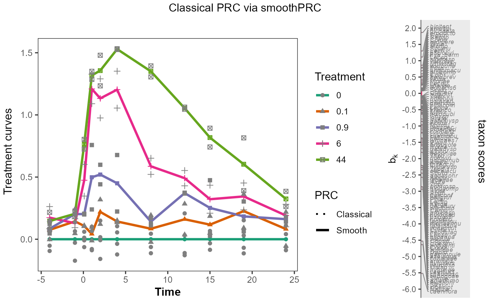

R/plot_species_scores_bk.r
plot_species_scores_bk.Rdplot_species_scores_bk creates a vertical line plot of ordination
scores with selection criterion for which scores to plot with names.
plot_species_scores_bk(
species_scores,
ylab = latex2exp::TeX("$b_k$"),
threshold = 7,
y_lab_interval = 0.5,
speciesname = NULL,
scoresname = "RDA1",
selectname = "Fratio1",
speciesgroup = NULL,
expand = 0.2,
verbose = TRUE
)a species-by-scores matrix, a data frame with
row names (species names) or a tibble with variable with name
speciesname containing species names and a column or variable with
name scoresname containing the scores (default: "RDA1"), e.g.
species scores from library vegan and an optional factor with
name specified by the argument speciesgroup.
y-axis label. Default: $b_k$.
species with criterion (specified by selectname)
higher than the threshold are displayed. Default: 7 (which is the
threshold F-ratio for testing a single regression coefficient at
p = 0.01 with 60 df for the error in a multiple regression
of each single species onto the condition and the ordination axis). If
selectname is not in species_scores, the threshold is
divided by 14, so that the default is 0.5.
interval of the y-axis ticks. A tick at no effect (0) is always included; default: 0.5.
name of the variable containing the species names
(default NULL uses row names).
name of the column or variable containing the species
scores to be plotted (default "RDA1").
name of the column or variable containing the criterion
for the selection of species to be displayed. Default: "Fratio1";
if selectname is not found in species_scores, set
to scoresname.
name of the factor, the levels of which receive different colors in the vertical plot.
amount of extension of the line plot (default 0.2).
logical for printing the number of species with names out of
the total number (default: TRUE).
a ggplot object
The absolute value of the criterion values is taken before selection, so
that also the species scores of the ordination can serve as a criterion
(e.g. selectname = "RDA1"). The function has been copied from
the PRC package at https://github.com/CajoterBraak/PRC.
The function is used in plotPRC.
## ---- Packages ----
suppressPackageStartupMessages({
library(LMMsolver)
library(dplyr)
library(ggplot2)
library(permute)
library(PRC)
})
#the chlorpyrifos experiment from van den Brink & ter Braak 1999
data(pyrifos, package = "vegan") #log-transformed species data from package vegan
Y <- pyrifos
Design <- data.frame(Time=gl(11, 12, labels=c(-4, -1, 0.1, 1, 2, 4, 8, 12, 15, 19, 24)),
Treatment=factor(rep(c(0.1, 0, 0, 0.9, 0, 44, 6, 0.1, 44, 0.9, 0, 6), 11)),
cosm = gl(12, 1, length=132))
mod_prc <- doPRC(pyrifos ~ Treatment:Time + Condition(Time), data = Design)
#>
#> Some constraints or conditions were aliased because they were redundant. This
#> can happen if terms are constant or linearly dependent (collinear):
#> 'Treatment44:Time-4', 'Treatment44:Time-1', 'Treatment44:Time0.1',
#> 'Treatment44:Time1', 'Treatment44:Time2', 'Treatment44:Time4',
#> 'Treatment44:Time8', 'Treatment44:Time12', 'Treatment44:Time15',
#> 'Treatment44:Time19', 'Treatment44:Time24'
cntr <- how(plots = Plots(strata =Design$cosm,type = "free"),
within = Within(type = "none"), nperm = 99)
anova(mod_prc, permutations = cntr)
#> Permutation test for rda under reduced model
#> Plots: Design$cosm, plot permutation: free
#> Permutation: none
#> Number of permutations: 99
#>
#> Model: rda(formula = pyrifos ~ Treatment:Time + Condition(Time), data = data, scale = scale)
#> Df Variance F Pr(>F)
#> Model 44 96.684 1.312 0.04 *
#> Residual 77 128.959
#> ---
#> Signif. codes: 0 '***' 0.001 '**' 0.01 '*' 0.05 '.' 0.1 ' ' 1
b_mod_prc <- vegan::scores(mod_prc,choices= 1, display = "sp")
smoothPRC_model <- set_smoothPRC_model(data = Design)
smoothPRC_model$spline
#> ~spl2D(time, dose, nseg = c(6, 6), degree = 3, pord = 2)
#> <environment: 0x0000028824f67c88>
smooth_PRC <- smoothPRC(Y, lmm_model = smoothPRC_model)
summary(smooth_PRC$obj)
#> Length Class Mode
#> axis1 32 LMMsolve list
#> axis2 32 LMMsolve list
cor(smooth_PRC$B[,"B1"], b_mod_prc)
#> RDA1
#> [1,] 0.9887614
cntr$nperm <- 19
an <- anova(smooth_PRC, permutations = cntr, verbose = TRUE)
#> iteration 10 out of 19
#> [1] 0.05
an$pval
#> [1] 0.05
#graph
plot_species_scores_bk(smooth_PRC$B, threshold = 20, scoresname = "B1")
#> 20 species with names out of 178 species

plot_smoothPRC_cdt(smooth_PRC,flip = FALSE,sample_times_only = TRUE)

plotPRC(mod_prc)
#> The analysis is based on model
#> pyrifos~Treatment:Time + Condition(Time)
#> The current score, condition and treatment(s) are:
#> score (y-axis): PRC1
#> condition (x-axis): Time
#> treatments (color ): Treatment
#> Set these arguments yourself if you wish otherwise.
#> 34 species with names out of 178 species

plotsmoothPRC(smooth_PRC, flip = FALSE, threshold = 1)
#> 122 species with names out of 178 species

# illustration that smoothPRC extends doPRC
classical_PRC_model <- set_smoothPRC_model(
fixed= Yb ~ Treatment:Time,
fixedH0 = Yb ~Time,
spline = NULL,
splineH0 = NULL,
data = Design)
classical_PRC <- smoothPRC(Y, lmm_model = classical_PRC_model)
plotsmoothPRC(classical_PRC, flip = FALSE, threshold = 1, title ="Classical PRC via smoothPRC")
#> 122 species with names out of 178 species

# the dotted and solid lines overlap